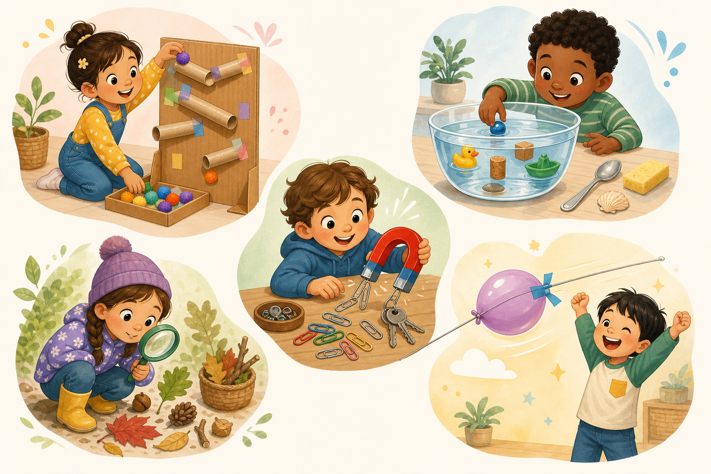

More play, less worksheet energy — five easy ideas that keep little ones busy, curious, and learning.

These feel like fun parent activities you can do today — not mini lesson plans wearing a social-post costume.
Tape cardboard tubes to a wall or big box and drop pom-poms through to build a little maze.
Guess first, then test spoons, corks, blocks, leaves, or coins.
Search for things that stick and sort them into yes and no piles.
Collect a few leaves and compare size, edges, color, and texture.
Thread string through a straw, tape a balloon to it, blow it up, and let it zoom across the room.